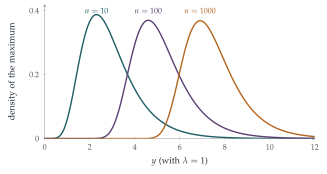

STEP III 2025, Question 11
Read the question before you go on. It is in the STEP III paper in OCR’s download of the 2025 STEP papers (a zip file): www.ocr.org.uk/Images/750486-2025-past-papers.zip
The hook
How high will the highest flood of the next century be? How long will the longest-lived of a thousand light bulbs last? How fast will the fastest marathon runner in a field of \(n\) be? Questions about extremes, the largest or smallest of many random values, matter enormously in engineering, insurance and climate science, and they behave very differently from averages.
This question finds the distribution of the largest of \(n\) exponential lifetimes. Its typical size grows like \(\ln n\), slowly but without limit. Its spread, however, does not grow at all: the maximum of a thousand lifetimes is just as predictable, give or take, as the maximum of ten. In the limit, the shape of its distribution is the Gumbel distribution, the extreme-value counterpart of the normal curve.
Before you start
The largest of \(X_1, \ldots, X_n\) is at most \(y\) exactly when what happens?
\(Y \leq y\) exactly when every \(X_i \leq y\). Independence then turns this into a product.
Working it through
Stage 1 The distribution of the maximum
Each \(X_i\) has \(\mathrm{F}(y) = 1 - e^{-\lambda y}\) for \(y \geq 0\), and by independence \[\mathrm{G}(y) = \mathrm{P}(X_1 \leq y, \ldots, X_n \leq y) = \bigl(1 - e^{-\lambda y}\bigr)^n. \qed\]
Stage 2 The quantiles
Solve \(\mathrm{G}(L) = \alpha\) for \(L\). Then solve \(\mathrm{G}(U) = 1 - \alpha\).
\(\bigl(1 - e^{-\lambda L}\bigr)^n = \alpha\) gives \(e^{-\lambda L} = 1 - \alpha^{1/n}\), so \[L(\alpha) = -\frac1\lambda\ln\bigl(1 - \alpha^{1/n}\bigr), \qquad U(\alpha) = -\frac1\lambda\ln\bigl(1 - (1 - \alpha)^{1/n}\bigr). \qed\]
Stage 3 Large \(n\)
Write \(\alpha^{1/n} = e^{(\ln\alpha)/n}\). For large \(n\) the exponent is small. What is \(1 - \alpha^{1/n}\) approximately?
\(\alpha^{1/n} = e^{(\ln\alpha)/n} \approx 1 + \frac{\ln\alpha}{n}\), so \(1 - \alpha^{1/n} \approx \frac{-\ln\alpha}{n} = \frac{\ln(1/\alpha)}{n}\). Hence \[\lambda L(\alpha) \approx -\ln\frac{\ln(1/\alpha)}{n} = \ln n - \ln\Bigl(\ln\frac1\alpha\Bigr). \qed\] Similarly, \(\lambda U(\alpha) \approx \ln n - \ln\bigl(\ln\frac{1}{1 - \alpha}\bigr)\).
Stage 4 Growth and spread
The median is \(L(\frac12)\), with \(\lambda L(\frac12) \approx \ln n - \ln\ln2 \to \infty\). But \[\lambda\bigl(U(\alpha) - L(\alpha)\bigr) \approx \ln\Bigl(\ln\frac1\alpha\Bigr) - \ln\Bigl(\ln\frac{1}{1 - \alpha}\Bigr),\] in which the \(\ln n\) terms have cancelled: the width does not depend on \(n\).■
Stage 5 A \(90\%\) interval
Take \(\alpha = 0.05\). What are \(\ln\frac1\alpha = \ln 20\) and \(\ln\frac{1}{0.95}\), approximately?
With \(\alpha = 0.05\), \(\ln20 \approx 3\), so \(\ln\ln\frac1\alpha \approx \ln3\). And \(\ln\frac{1}{0.95} = -\ln(1 - 0.05) \approx 0.05 = \frac{1}{20}\), so \(\ln\ln\frac{1}{1 - \alpha} \approx \ln\frac{1}{20} \approx -3\). The width is therefore about \(\frac1\lambda(\ln3 + 3) \approx \frac{4.1}{\lambda}\), and \(Y\) lies in \([L(0.05), U(0.05)]\), an interval of width about \(4\lambda^{-1}\), with probability \(0.9\).■

Looking back
The maximum is at most \(y\) when all are. Independence made the distribution of the maximum a power.
Quantiles by inversion. Solving \(\mathrm{G}(y) = \alpha\) gave exact formulas for the interval ends.
Approximate, then compare. The approximations for \(L\) and \(U\) both contained \(\ln n\), which cancelled in the width.
What’s really going on
The Gumbel distribution
Since \(\mathrm{P}(\lambda Y - \ln n \leq x) = \bigl(1 - \frac{e^{-x}}{n}\bigr)^n \to \exp(-e^{-x})\), the shifted maximum \(\lambda Y - \ln n\) has, in the limit, the Gumbel distribution with distribution function \(\exp(-e^{-x})\). Its mean is Euler’s constant \(\gamma \approx 0.577\). You met it already: the time to collect all \(n\) coupons (Section 9.11) is the maximum of \(n\) (nearly independent) waiting times, which is why it is about \(n\ln n + \gamma n\), with Gumbel fluctuations of order \(n\).
Extreme value theory
A remarkable theorem of Fisher, Tippett and Gnedenko (1928–1943) says that, suitably shifted and scaled, the maximum of many independent identically distributed variables can have only three possible limiting shapes: Gumbel (for light tails, like the exponential or normal), Fréchet (for heavy tails, like the Cauchy) and Weibull (for variables with a hard upper limit). It is the extreme-value analogue of the central limit theorem (Section 12.24). Engineers use it to design flood defences and offshore platforms for the “hundred-year wave”, insurers to price catastrophe cover, and climate scientists to estimate how heatwaves are changing.
Emil Julius Gumbel, a German statistician and an outspoken opponent of the Nazis, who was forced out of his university post in 1932 and eventually fled to the United States, applied extreme value theory to the flooding of rivers in the 1930s and 1940s. His book Statistics of Extremes (1958) made the subject a practical tool. The Dutch Delta Works, built after the North Sea flood of 1953 to protect the Netherlands, were designed using extreme value statistics to withstand a storm surge expected about once in \(10\,000\) years.
The thinking skill
For the maximum of independent variables, \(\mathrm{P}(\max \leq y) = \prod\mathrm{P}(X_i \leq y)\); for the minimum, \(\mathrm{P}(\min > y) = \prod\mathrm{P}(X_i > y)\).
This one idea handles the nearest supermarket (Section 12.19), the first bus (Section 12.18) and the longest-lived bulb. At university it is the starting point of order statistics and extreme value theory.
Try this next
The expected maximum. Show that \(\mathrm{E}(Y) = \frac1\lambda\bigl(1 + \frac12 + \cdots + \frac1n\bigr)\). (Hint: by memorylessness, after the first of the \(n\) lifetimes ends, the remaining \(n - 1\) start afresh.)
The minimum. Show that the smallest of \(X_1, \ldots, X_n\) is exponential with parameter \(n\lambda\).
The median exactly. Find the exact median of \(Y\) and compare it with the approximation \(\frac1\lambda(\ln n - \ln\ln2)\) for \(n = 10\).
Uniform maxima. If \(X_1, \ldots, X_n\) are uniform on \([0, 1]\), find the distribution of their maximum \(M\), and show that \(n(1 - M)\) is approximately exponential for large \(n\). Which of the three extreme-value shapes is this?
Further reading
Stuart Coles, An Introduction to Statistical Modeling of Extreme Values (Springer). The standard introduction, with real data on floods and sea levels.
Emil Julius Gumbel, Statistics of Extremes (Dover). The classic.
David Spiegelhalter, The Art of Uncertainty (Pelican), on rare events and how to think about them.